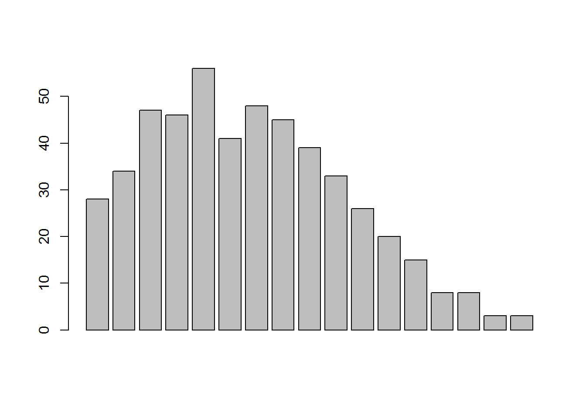

Last updated: 2018-10-23
workflowr checks: (Click a bullet for more information) ✖ R Markdown file: uncommitted changes
The R Markdown is untracked by Git. To know which version of the R Markdown file created these results, you’ll want to first commit it to the Git repo. If you’re still working on the analysis, you can ignore this warning. When you’re finished, you can run wflow_publish to commit the R Markdown file and build the HTML.
✔ Environment: empty
Great job! The global environment was empty. Objects defined in the global environment can affect the analysis in your R Markdown file in unknown ways. For reproduciblity it’s best to always run the code in an empty environment.
✔ Seed:
set.seed(20180712)
The command set.seed(20180712) was run prior to running the code in the R Markdown file. Setting a seed ensures that any results that rely on randomness, e.g. subsampling or permutations, are reproducible.
✔ Session information: recorded
Great job! Recording the operating system, R version, and package versions is critical for reproducibility.
✔ Repository version: 22f4086
wflow_publish or wflow_git_commit). workflowr only checks the R Markdown file, but you know if there are other scripts or data files that it depends on. Below is the status of the Git repository when the results were generated:
Ignored files:
Ignored: .Rhistory
Ignored: analysis/data-augmentation_cache/
Untracked files:
Untracked: analysis/data-augmentation.Rmd
Untracked: analysis/figures.Rmd
Untracked: analysis/gibbs-sampler.Rmd
Untracked: docs/figure/
Unstaged changes:
Modified: analysis/index.Rmd
Suppose we have original data \({\bf x}\) and a single scalar \(z\), forming the augmented data \({\bf y}\), start from a value \(\eta^{(0)}\) from the prior distribution and iterate as below
This is the chained data augmentation as the distribution of next pair \((\eta, z)\) depends on the present pair. By the property of Markov chains, after a reasonably large number of iterations, the joint distribution of \((\eta, z)\) is close to \(p(\eta, z|{\bf x})\) irrespective of how the chain started.
Successive observations of the pair \((\eta, z)\) will not be independent. To get the i.i.d sample, we need to run the chain \(k\) times and retain the final value of each chain.
This is an exmaple due to Casella and George (1992). Suppose the joint distribution of \((\pi, y)\) is
\[ p(y, \pi)={n \choose y}\pi^{y+\alpha-1}(1-\pi)^{n-y+\beta-1}, y=0, 1, \cdots, n; 0\leq \pi \leq 1\] The interest is the marginal distribution of \(y\). One way is to integrate out \(\pi\). Another way is to get the distribution from two conditional distributions
This is a simple example without observed data \({\bf x}\). To initialize the process, start with a value of \(\pi \sim U(0,1)\).
nr=50
m=500
k=10
n=16
alpha=2
beta=4
lambda=16
maxn=24
h=rep(0, n+1)
for (i in 1:m)
{
pi=runif(1)
for (j in 1:k)
{
y=rbinom(1, n, pi)
newalpha=y+alpha
newbeta=n-y+beta
pi=rbeta(1, newalpha, newbeta) # take the final value
}
for (t in 0:n)
{
if (t==y)
h[t+1]=h[t+1]+1
}
}
barplot(h)
Run \(m=500\) independent chains, each of 10 iterations for the case \(n=16, \alpha=2, \beta=4\) approximates to the beta-binomial density quite well.
Data on the rates of loss of feedwater flow for a collection of nuclear power system.
| system (i) | \(y_i\) | \(t_i\) | \(r_i=\frac{y_i}{t_i}\) |
|---|---|---|---|
| 1 | 5 | 94.320 | 0.0530 |
| 2 | 1 | 15.720 | 0.0636 |
| 3 | 5 | 62.880 | 0.0795 |
| 4 | 14 | 125.760 | 0.1113 |
| 5 | 3 | 5.240 | 0.5725 |
| 6 | 19 | 31.440 | 0.6043 |
| 7 | 1 | 1.048 | 0.9542 |
| 8 | 1 | 1.048 | 0.9542 |
| 9 | 4 | 2.096 | 1.9084 |
| 10 | 22 | 10.480 | 2.0992 |
There is a great variation for failure rates. It is reasoable to assume the number of failures in any fixed time interval follows a Poisson distribution and its mean is proportional to the length of the interval.
Assume
\[y_i|\theta_i \sim P(\theta_it_i), \theta_i \sim S_0^{-1}\chi^2_{\nu}\]
with \(\nu=1.4\). We are interested in the marginal distribution of \(p(\theta_i|{\bf y})\), but unfortunately it does not have a closed form.
Let
\[ {\bf \theta}=(\theta_1, \theta_2, \cdots, \theta_k)\]
\[\theta_{-i}=(\theta_1, \cdots, \theta_{i-1}, \theta_{i+1}, \cdots, \theta_k)\]
\[p(\theta, {\bf y}, S_0)=\prod p(y_i, \theta_i|S_0) p(S_0)=\prod p(y_i|\theta_i)p(\theta_i|S_0)p(S_0)\]
It is easy to get that
\[ \begin{aligned} p(\theta_i|\theta_{-i}, {\bf y}, S_0) &=\frac{p(\theta, S_0, {\bf y})}{p(\theta_{-i}, {\bf y}, S_0)} \\ & \propto \frac{p(y_i|\theta_i)}{p(\theta_i|S_0)} \\ &\propto \theta_i^{(\nu+2y_i)/2-1}exp[-\frac{\theta_i(S_0+2t_i)}{2}] \\ &\sim S_1^{-1}\chi^2_{\nu'} \end{aligned} \] where \(S_1=S_0+2t_i, \nu'=\nu+2y_i\)
As for \(S_0\), use \(U_0^{-1}\chi^2_{\rho}\) as a prior for \(S_0\),
\[ \begin{aligned} p(S_0|\theta, {\bf y}) & \propto [\prod p(\theta_i|S_0)]p(S_0) \\ & \propto S_0^{(\rho+k\nu)/2}exp[-\frac{(U_0+\sum \theta_i)S_0}{2}] \\ & \sim U_1^{-1}\chi^2_{\rho'} \end{aligned} \]
N=10000
burnin=1000
k=10
y=c(5,1,5,14, 3, 19, 1, 1, 4, 22)
t=c(94.320, 15.720, 62.880, 125.760, 5.240, 31.440, 1.048, 1.048, 2.096, 10.480)
r=y/t
U=1
rho=0.2
nu=1.4
S=rep(NA, N)
S[1]=2
theta=matrix(NA, nrow=N, ncol=k)
theta[1,]=rep(1, k)
for (j in 2:N)
{
for (i in 1:k)
theta[j,i]=(S[j-1]+2*t[i])^{-1}*rchisq(1, nu+2*y[i])
S[j]=(U+sum(theta[j,]))^{-1}*rchisq(1, rho+k*nu)
}
Strunc=S[burnin:N]
thetatrunc=theta[burnin:N,]
thetamean=apply(thetatrunc, 2, mean)
thetasd=apply(thetatrunc, 2, sd)
thetastats=cbind(thetamean, thetasd)
colnames(thetastats)=c("mean", "sd")
print(thetastats) mean sd
[1,] 0.05994635 0.02518325
[2,] 0.10227611 0.07866051
[3,] 0.08972722 0.03736920
[4,] 0.11622319 0.03049185
[5,] 0.59869120 0.31415986
[6,] 0.60958289 0.13695857
[7,] 0.88380589 0.69798821
[8,] 0.89875252 0.72362856
[9,] 1.58451971 0.76341893
[10,] 1.99614031 0.42647936sessionInfo()R version 3.5.0 (2018-04-23)
Platform: x86_64-w64-mingw32/x64 (64-bit)
Running under: Windows 7 x64 (build 7601) Service Pack 1
Matrix products: default
locale:
[1] LC_COLLATE=English_United States.1252
[2] LC_CTYPE=English_United States.1252
[3] LC_MONETARY=English_United States.1252
[4] LC_NUMERIC=C
[5] LC_TIME=English_United States.1252
attached base packages:
[1] stats graphics grDevices utils datasets methods base
loaded via a namespace (and not attached):
[1] workflowr_1.0.1 Rcpp_0.12.16 digest_0.6.15
[4] rprojroot_1.3-2 R.methodsS3_1.7.1 backports_1.1.2
[7] git2r_0.21.0 magrittr_1.5 evaluate_0.10.1
[10] stringi_1.1.7 whisker_0.3-2 R.oo_1.22.0
[13] R.utils_2.6.0 rmarkdown_1.9 tools_3.5.0
[16] stringr_1.3.0 yaml_2.1.19 compiler_3.5.0
[19] htmltools_0.3.6 knitr_1.20 This reproducible R Markdown analysis was created with workflowr 1.0.1